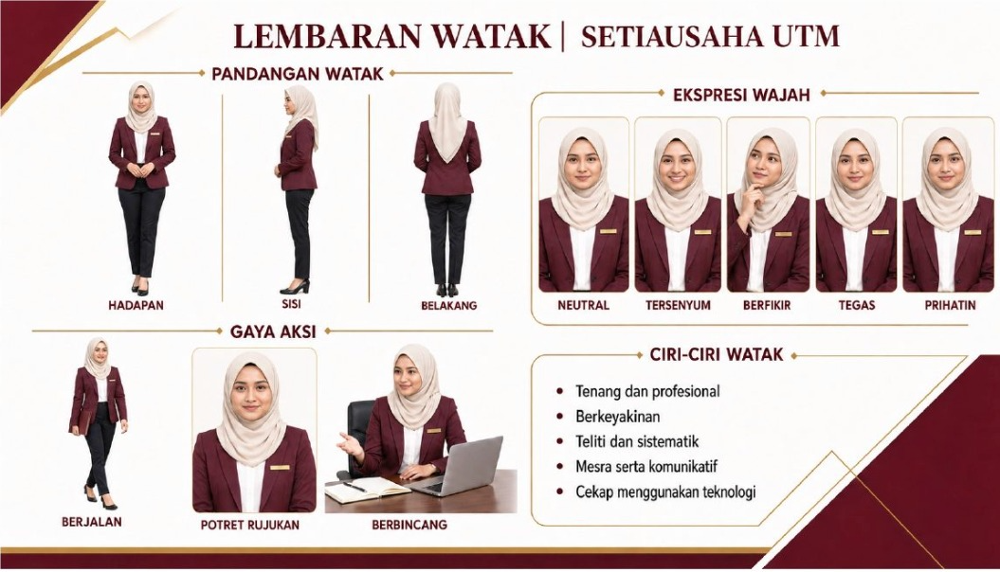

SESI 4 · WATAK, STORYBOARD & VIDEO
Daripada foto sendiri kepada cerita visual yang konsisten.
Bina identiti watak daripada foto anda, hasilkan lembaran rujukan pelbagai pandangan dan gaya, kemudian gunakan watak yang sama dalam storyboard ucapan Sambutan Kemerdekaan Malaysia.

PERSEDIAAN
Sediakan foto yang sesuai dan dibenarkan
Gunakan gambar diri sendiri yang jelas. Semua imej seterusnya mesti merujuk foto dan lembaran watak yang telah diluluskan.
Privasi dan persetujuan: Jangan gunakan foto rakan
sekerja, murid, pelajar atau orang awam tanpa kebenaran. Elakkan
memuat naik kad pengenalan, tag nama yang boleh dibaca atau maklumat
sulit. Watak AI mesti dilabel sebagai visual janaan AI apabila
diterbitkan.
RUJUKAN VISUAL
Dua hasil yang saling berkait
Lembaran watak mengunci rupa dan personaliti. Storyboard menggunakan rujukan itu untuk mengekalkan kesinambungan antara semua babak.

ALIRAN LATIHAN
15 langkah daripada identiti kepada video
Gunakan perbualan yang sama. Muat turun setiap hasil yang diluluskan sebelum meneruskan.
1Profil2Rujukan3Pandangan4Ekspresi5Aksi6Gaya7Audit watak8Brief9Skrip10Shot list11Storyboard12Audio13Video14Sari kata15Audit akhir
BAHAGIAN A · LEMBARAN WATAK
Kunci identiti sebelum membina cerita
Langkah 1–7 memastikan wajah, pakaian, proporsi dan personaliti kekal sama dalam semua gaya dan babak.
Bina profil watak
Bertindak sebagai pengarah seni dan pereka watak profesional. Gunakan foto diri saya yang dimuat naik sebagai satu-satunya rujukan identiti. Jangan jana imej dahulu. Bina PROFIL WATAK V1 dalam Bahasa Melayu dengan medan: nama watak [NAMA], peranan [JAWATAN/PERANAN], lingkungan umur tampak, bentuk wajah, tona kulit, gaya rambut atau tudung, pakaian utama, warna pakaian, aksesori tetap, postur, gaya komunikasi, kekuatan, nilai, tabiat kecil dan lima ciri personaliti. Cadangkan ciri personaliti yang profesional seperti tenang, yakin, teliti, sistematik, mesra dan cekap menggunakan teknologi. Bezakan ciri yang dapat dilihat pada foto daripada ciri yang saya perlu sahkan. Jangan mereka maklumat sensitif, latar keluarga, agama, kesihatan atau kelayakan.
Hasilkan potret rujukan utama
Gunakan foto saya dan PROFIL WATAK V1 yang telah disahkan. Hasilkan satu potret rujukan watak fotorealistik dari kepala hingga pinggang, pandangan tepat ke kamera, ekspresi neutral mesra, postur tegak dan latar putih bersih. Kekalkan identiti wajah saya dengan tepat: bentuk wajah, mata, hidung, bibir, tona kulit, umur tampak dan ciri unik. Kekalkan pakaian profesional, gaya rambut atau tudung dan aksesori yang dipersetujui. Cahaya studio lembut, warna semula jadi, tiada retouch berlebihan. Jangan tambah teks, logo, tag nama, objek, tangan tambahan atau ciri wajah baharu. Format 4:5, resolusi tinggi. Imej ini dinamakan RUJUKAN WATAK UTAMA.
Pandangan hadapan, sisi dan belakang
Gunakan RUJUKAN WATAK UTAMA untuk menghasilkan lembaran model seluruh badan dengan tiga pandangan: HADAPAN, SISI KANAN dan BELAKANG. Susun sebaris pada latar putih, skala badan sama, kaki kelihatan penuh dan kamera pada paras mata. Kekalkan identiti, tinggi relatif, proporsi, pakaian, warna, kasut, tudung atau rambut dan aksesori yang sama pada ketiga-tiga pandangan. Pose berdiri neutral dan tangan dalam kedudukan semula jadi. Gunakan pencahayaan studio seragam. Letakkan label pendek di bawah setiap pandangan sahaja. Jangan ubah reka bentuk pakaian, wajah atau bentuk badan. Jangan tambah beg, perabot, logo atau latar tempat.
Set ekspresi wajah
Gunakan RUJUKAN WATAK UTAMA untuk menghasilkan enam potret kepala dan bahu dengan identiti serta sudut kamera yang sama. Ekspresi: NEUTRAL, TERSENYUM, BERFIKIR, YAKIN, PRIHATIN dan BERSEMANGAT. Perubahan mesti berlaku pada ekspresi sahaja. Kekalkan bentuk wajah, umur tampak, tona kulit, pakaian, gaya rambut atau tudung, aksesori, cahaya dan latar putih. Susun dalam grid 3 × 2 dengan jarak sekata dan label tepat. Elakkan senyuman berlebihan, perubahan solekan, warna mata, bentuk muka, gaya pakaian atau identiti antara panel.
Set gaya aksi
Gunakan RUJUKAN WATAK UTAMA untuk menghasilkan enam aksi seluruh atau separuh badan: BERJALAN, BERDIRI MENYAMBUT, BERCAKAP KEPADA KAMERA, BERBINCANG, MENUNJUKKAN SKRIN dan MEMBERI TABIK HORMAT YANG SOPAN. Kekalkan wajah, pakaian, proporsi dan aksesori. Pastikan anatomi tangan dan jari betul, pose semula jadi serta ruang kosong yang mencukupi di sekeliling watak. Latar putih dan cahaya studio yang konsisten. Susun grid 3 × 2 dengan label ringkas. Jangan tambah individu lain, bendera, logo, teks panjang atau objek yang menutup wajah.
Teroka pelbagai gaya visual
Hasilkan lembaran perbandingan watak yang sama dalam enam gaya visual: FOTOREALISTIK, SINEMATIK, ILUSTRASI EDITORIAL, 3D REALISTIK, CAT AIR DIGITAL dan KOMIK MODEN. Gunakan pose hadapan dari kepala hingga pinggang, ekspresi yakin dan komposisi yang sama bagi semua panel. Identiti mesti masih jelas dikenali sebagai diri saya. Kekalkan pakaian, warna, tudung atau rambut dan aksesori. Hanya gaya persembahan boleh berubah. Susun grid 3 × 2 dengan label gaya. Jangan meniru gaya khusus artis hidup, jenama animasi atau watak berhak cipta. Selepas imej, cadangkan satu gaya paling sesuai untuk video ucapan kemerdekaan yang profesional dan jelaskan sebabnya.
Audit lembaran watak
Jangan jana imej baharu. Audit semua hasil watak berbanding foto asal dan RUJUKAN WATAK UTAMA. Semak identiti wajah, umur tampak, tona kulit, bentuk badan, tudung atau rambut, pakaian, warna, kasut, aksesori, anatomi, bilangan jari, label, skala dan konsistensi antara pandangan, ekspresi, aksi serta enam gaya. Hasilkan jadual dengan lajur: komponen, keadaan dikehendaki, keadaan semasa, LULUS/TIDAK LULUS, tahap isu dan pembetulan khusus. Akhiri dengan “KUNCI KESINAMBUNGAN WATAK” maksimum 120 patah perkataan untuk disalin ke semua prompt storyboard dan video.
BAHAGIAN B · STORYBOARD KEMERDEKAAN
Bina ucapan 30 saat dalam enam babak
Tema contoh: “Malaysia MADANI: Jiwa Merdeka”. Peserta boleh menukar tema, khalayak dan lokasi tanpa mengubah proses.
Tetapkan brief kreatif
Bertindak sebagai pengarah kreatif video korporat. Gunakan watak saya berdasarkan KUNCI KESINAMBUNGAN WATAK. Bina BRIEF VIDEO V1 untuk ucapan Sambutan Kemerdekaan Malaysia berdurasi 30 saat. Tetapan: - penyampai: watak saya; - khalayak: warga Fakulti Komputeran, UTM; - tujuan: menyampaikan semangat kemerdekaan, perpaduan, tanggungjawab dan kemajuan melalui ilmu serta teknologi; - nada: ikhlas, bersemangat, inklusif dan profesional; - format: 16:9, sesuai untuk laman web dan media sosial; - lokasi: ruang moden kampus dengan elemen Malaysia yang sederhana. Cadangkan satu mesej utama, tiga mesej sokongan, emosi permulaan–pertengahan–akhir, gaya visual, palet merah-putih-biru-kuning, muzik dan seruan penutup. Elakkan slogan politik, dakwaan sejarah yang tidak disahkan dan penggunaan logo tanpa kebenaran.
Tulis skrip ucapan 30 saat
Gunakan BRIEF VIDEO V1. Tulis skrip ucapan Sambutan Kemerdekaan Malaysia sepanjang 65–75 patah perkataan agar boleh disampaikan dalam kira-kira 30 saat. Struktur: 1. salam dan pembukaan ringkas; 2. makna kemerdekaan pada hari ini; 3. peranan perpaduan, ilmu dan teknologi; 4. ajakan bersama; 5. penutup “Selamat Menyambut Hari Kebangsaan”. Gunakan Bahasa Melayu baku, ayat mudah disebut, inklusif dan tidak terlalu berbunga. Tandakan jeda dengan / dan penegasan dengan HURUF TEBAL dalam versi teks. Sediakan dua versi: rasmi dan mesra. Jangan cipta tema rasmi, nombor ulang tahun atau petikan tokoh jika tidak diberikan.
Bina shot list enam babak
Pecahkan skrip rasmi yang diluluskan kepada enam babak, jumlah tepat 30 saat. Hasilkan jadual dengan lajur: babak, timecode, durasi, jenis syot, sudut kamera, visual/aksi, dialog tepat, ekspresi, pergerakan kamera, latar, audio dan peralihan. Gunakan variasi yang terkawal: establishing shot, syot sederhana, close-up, over-the-shoulder dan syot penutup. Pastikan dialog setiap babak muat dalam durasi. Kekalkan watak, pakaian dan lokasi mengikut KUNCI KESINAMBUNGAN WATAK. Cadangkan maksimum dua objek simbolik seperti Jalur Gemilang yang tepat atau cahaya warna kebangsaan. Jangan menukar rupa watak, memasukkan orang ramai tanpa keperluan atau memaparkan teks panjang dalam visual.
Hasilkan lembaran storyboard
Gunakan shot list enam babak dan RUJUKAN WATAK UTAMA. Hasilkan satu lembaran storyboard profesional berformat 16:9 dengan enam panel dalam grid 3 × 2. Setiap panel mesti memaparkan: nombor babak, durasi, jenis syot, imej babak, Visual/Aksi, Dialog dan Emosi. Sertakan potret rujukan watak di penjuru kiri serta bar bawah yang menyatakan “Durasi keseluruhan: 30 saat”. Kekalkan wajah, umur tampak, pakaian, warna, aksesori dan proporsi watak pada semua panel. Pastikan arah pandangan, kedudukan objek, cahaya dan pergerakan bersambung secara logik. Gunakan teks Bahasa Melayu yang pendek dan boleh dibaca. Jika sistem gagal menjana teks tepat, hasilkan panel tanpa teks dan berikan kandungan label secara berasingan untuk ditambah dalam Canva atau PowerPoint.
Rancang suara, muzik dan kesan bunyi
Berdasarkan storyboard yang diluluskan, sediakan pelan audio 30 saat dalam jadual timecode. Masukkan gaya suara watak, kelajuan pertuturan, jeda, penegasan, muzik latar dan kesan bunyi yang minimum. Suara mestilah hangat, yakin, jelas dan semula jadi dalam Bahasa Melayu Malaysia. Muzik instrumental bersemangat patriotik tetapi bukan salinan lagu berhak cipta; mulakan lembut, bina emosi dan tamat dengan kemas. Tetapkan muzik sekurang-kurangnya 12 dB lebih rendah daripada suara semasa dialog. Jangan klon suara individu tanpa kebenaran. Sediakan juga prompt teks-ke-suara dan prompt penjanaan muzik instrumental selama 30 saat.
Tukar storyboard kepada prompt video
Tukar storyboard enam babak kepada enam prompt imej-ke-video yang boleh dijana secara berasingan. Bagi setiap prompt, masukkan timecode, durasi, KUNCI KESINAMBUNGAN WATAK, jenis syot, aksi, ekspresi, latar, cahaya, pergerakan kamera, objek, suasana dan bingkai akhir untuk disambungkan kepada babak berikutnya. Arahan negatif bagi semua babak: jangan ubah identiti wajah, umur, pakaian, tudung atau rambut, aksesori, nisbah badan atau lokasi; tiada anggota tambahan, lip-sync rosak, wajah berubah, bendera cacat, teks janaan, logo rekaan, kamera bergegar atau objek muncul secara tiba-tiba. Format 16:9, 25 fps, gerakan realistik dan sinematik sederhana. Berikan prompt induk konsistensi dahulu, kemudian enam prompt babak dalam blok berasingan.
Sediakan sari kata dan pelan suntingan
Gunakan skrip dan timecode akhir untuk menyediakan: 1. fail sari kata SRT lengkap selama 30 saat; 2. senarai susunan enam klip; 3. titik potongan, peralihan dan tahap audio; 4. arahan paparan tajuk pembukaan dan penutup; 5. tetapan eksport 1920 × 1080, H.264, 25 fps. Sari kata maksimum dua baris dan mudah dibaca dengan kontras tinggi. Jangan menutup wajah. Gunakan ejaan Bahasa Melayu yang betul. Tajuk akhir hanya “Selamat Menyambut Hari Kebangsaan” dan nama/unit yang telah saya sahkan. Jangan tambah logo atau nombor sambutan tanpa pengesahan.
Audit kesinambungan dan ketepatan
Audit lembaran watak, skrip, shot list, storyboard, audio, enam klip video dan sari kata sebagai satu hasil lengkap. Semak: persetujuan penggunaan foto; ketepatan identiti; konsistensi wajah, pakaian dan aksesori; anatomi; kesinambungan arah pandangan, objek dan cahaya; jumlah durasi 30 saat; dialog sepadan timecode; lip-sync; ketepatan Jalur Gemilang; ejaan; kontras; sari kata; tahap audio; tiada logo atau fakta rekaan; dan pelabelan visual janaan AI. Hasilkan matriks dengan lajur komponen, kriteria, status LULUS/TIDAK LULUS, tahap isu, bukti dan pembetulan. Jangan ubah bahan dahulu. Akhiri dengan senarai pembetulan mengikut keutamaan serta senarai semak kelulusan sebelum penerbitan.
HASIL SERAHAN
Satu watak yang konsisten, satu cerita yang lengkap
Aktiviti pengayaan: Ulang Bahagian B dengan tema
lain seperti ucapan alu-aluan staf baharu, pengumuman keselamatan
siber, promosi program fakulti, penerangan prosedur HR atau panduan
perkhidmatan pejabat akademik. Kekalkan lembaran watak yang sama
tetapi bina brief, skrip dan storyboard baharu.